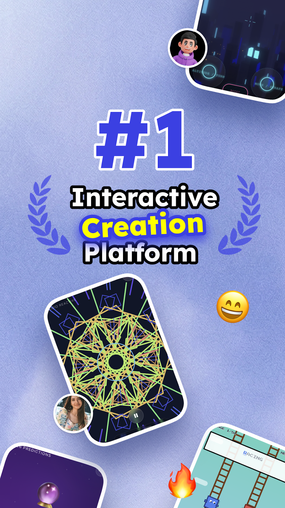
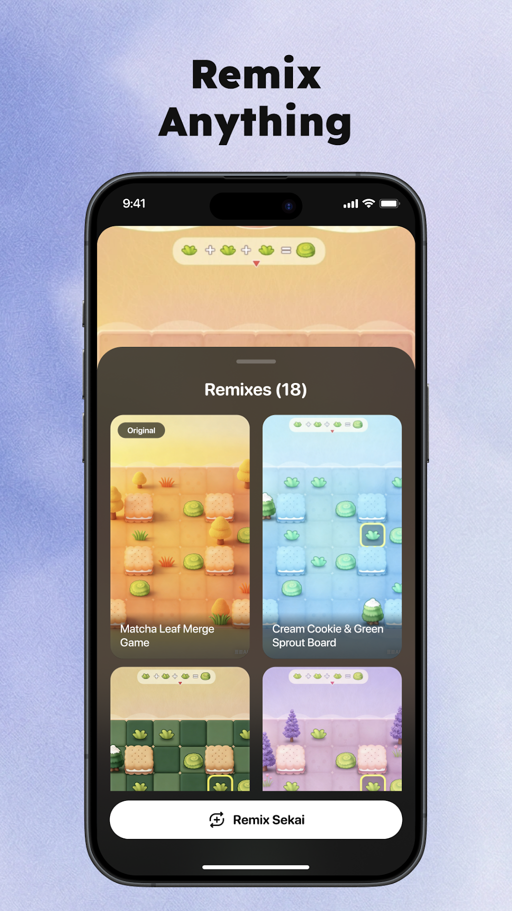

团建前一天才想起要破冰，我用 Sekai 半小时救了场
部门团建提前两天通知要有人准备破冰环节，翻遍手机找不到合适的东西，最后被同事一句话带到了 Sekai，结果成了那次团建最有记忆点的环节。
部门团建提前两天甩通知的时候我正在写周报。
领导在群里 @了三个名字说"你们年轻人想想办法搞点轻松的开场，别让大家坐那儿玩手机"——其中一个就是我。我盯着手机屏幕愣了十分钟，脑子里闪过一连串选项：真心话大冒险太老套、你画我猜没人愿意上台、找个破冰游戏的小程序吧界面都丑得像十年前的东西，而且大多需要开房间、连麦、下载插件，一群三十岁上下的同事没人愿意为了破冰折腾这些。
最后是同组的阿泽看不下去了。他凑过来问我在愁什么，听完掏出手机给我看了一个东西："用这个试试。我前几天跟兄弟群玩过，做了个真心话的东西，发群里直接点就能玩。"
那是我第一次打开 Sekai，阿泽让我去它的下载拿一个试试。
它不是聊天机器人，是个"三秒搭出来就能玩"的东西
说实话我一开始以为又是另一个 AI 角色聊天应用——2024 年那波动漫角色扮演 App 我装过两个，新鲜了三天就卸载了，觉得跟 AI 聊天再热闹也没个落点。但 Sekai 的官网上写的 Create·Remix·Play 三个词让我有点好奇，打开之后果然完全不是那个样子。
界面推过来的不是角色卡列表，而是一堆可以点开试玩的"Jam"——测验、小游戏、互动卡片，每个都有缩略图和一句话说明，滑动起来像逛短视频。我随手点开一个"你最像办公室里的谁"的测验，五道选择题做完它直接给了结果，还配了一张生成的卡通头像。这个体验让我有点意外。
更意外的是 Create 功能。我点了底部的创建按钮，输入框提示我"描述你想要做什么"。我犹豫了一下，输入了一句很直白的话："一个给公司团队做的保守版真心话大冒险，大家可以匿名回答。"
然后就是等待。大概七八秒吧，界面跳出来一个完整的 Jam——有封面、有引导语、有十二道问题、有最终结算页。我往下翻了翻，问题里有"你在公司最佩服的是谁""你觉得哪个部门配合起来最顺""你藏了多久才敢说真话"——比我想的保守得多，完全可以放心发团建群里。

没让 AI 一次定稿，我 Remex 了自己的版本
Jam 生成出来之后我没有直接发群里。原因很简单——有些问题虽然保守，但还是带着 AI 的通用腔调，"你最佩服的是谁"这种题放在真实的公司里有点太空泛，我想改得更贴近我们团队。
Sekai 里改东西不需要重新创建，有个 Remex 按钮。点一下就进入编辑模式，原来的 Jam 骨架全部保留，我可以一道题一道题地微调。我把几道题换成了更具体的——"最佩服哪位同事的工作方式""哪个项目让你觉得参与得最值""如果你能给领导提一条建议会说什么"。改完之后重新试玩了一遍，感觉顺多了，匿名的设定也保留了。
阿泽凑过来看了一眼说："你这比我上次那个精细多了。我当时直接 Create 完就发了，效果也还行，但你这个改了更贴咱们部门。"
我之前对 Remex 这个词没什么感觉，觉得就是"抄了改改"的意思。但那天之后我发现它是 Sekai 最聪明的设计——AI 帮你把骨架搭好，你只需要在内容层面磨，不用从零开始想结构、想逻辑。社区里已经有超过三分之一的 Jam 是被 Remex 过的，很多热门的 Jam 下面挂着十几二十个不同的改编版本，有的改了角色、有的换了场景、有的纯粹就是把问题里的梗换成了只有他们小圈子才懂的东西。
发到群里之后，破冰环节自己跑起来了
我在团建前一晚把 Jam 的分享链接发进了部门群。链接是个短地址，我特意加了一句"明天团建开场前半小时大家可以先点进去玩一下，匿名的，结果不会发群里"。
没想到第二天早上团建大巴上就有人开始玩了。我坐最后一排，听到前面几排有人在笑、有人在跟旁边的人说自己选了什么。打开手机看 Jam 的后台数据，半小时里已经有二十多个人玩完了——我们部门一共二十六个人。
到了团建酒店的会议室，领导说"开场游戏的环节交给小王了"，我站起来什么都没准备，就说了一句："昨晚那个 Jam 大家玩了吧？说说看你们各自选了谁？"
然后场面就活了。有人说"我选了技术组的老张，他上次救了我们整个项目"，有人笑着说"我写的是运营组，别问我为什么"，还有人说"我给领导提的建议是别再让我们周五下午开会了"——气氛一下子从刚进会议室的拘谨变成了大家互相打趣。领导自己也玩了，听完那条建议笑出了声，说"这条我收到了，下周五真不开了"。

那场破冰没有用任何传统的游戏，没有站成圈、没有抢道具、没有人尴尬地背自己的名字。我后来想，如果当时我硬着头皮上去搞个"你画我猜"或者"名字接龙"，很可能冷场。Sekai 帮我把破冰这件事从"我来组织大家做个活动"变成了"有个好玩的东西发群里，大家自己玩完有了话题"。
转型的 Sekai 和老用户的遗憾
团建之后我对 Sekai 好奇了好几天，翻了一些社区讨论和Sekai文档。原来它不是从一开始就做这个的——2024 年刚上线的时候 Sekai 是一款动漫角色扮演应用，跟 Character.AI 抢市场，老用户在 Reddit 上至今还在吐槽"角色扮演功能怎么没了""Legacy 模式还能回来吗"。但 2026 年产品大改，Create·Remix·Play 成了主线，AI 迷你应用生成器成了新的定位。
这个转型背后是 2600 万美元的融资和一个很实在的产品判断：单纯角色扮演的用户粘性有限，但 Create+Remix+Play 三个循环合在一起，用户既可以创建、又可以改别人的、还可以单纯玩，社区的内容供给速度就上去了——据说现在平均每 0.5 秒就有一个新 Jam 被创建出来。
我能理解老用户的遗憾，但对我这种从"做个破冰工具"才进来的新用户来说，现在的 Sekai 正好踩在我需要的点上。它不是完美的——Jam 分享目前不是真·多人同步，每个人点开都是各自玩各自的，也没有评论区能让朋友玩完直接反馈给创建者，只能在聊天里直接说。另外 Legacy 角色扮演功能被收窄之后，迭代速度明显慢了，bug 修复也不及时，如果你真的是冲着"带长期记忆的 AI 角色扮演"来的，现在的 Sekai 可能不是最好的选择。
但 Sekai 的定位本来也不是要满足所有人。它瞄准的就是那种"我有个想法但不会写代码也不想搭服务器"的人——学生党想给同好做个互动测验、上班族想在团建前快速搭个破冰、闺蜜群里有人过生日想做个互动卡片、游戏爱好者想把热门 IP 的角色换进自己的小游戏里。这些场景以前需要折腾一堆工具，现在用 Sekai 一句话就搞定了。
写完这篇的时候我又 Remex 了一个新的
查资料的那几天我 Remex 了别人的一个"你最适合养什么宠物"的 Jam，把所有问题换成了跟"你最适合用什么 AI 工具"相关的选项，发给了我们组的几个同事。阿泽玩完结果是"适合用 Sekai 搭点小东西"，他说："你看，Sekai 真的会从一个工具变成一个圈。"
我不确定这个圈能转多久。毕竟 2024 年的那次转型已经说明这个产品的方向不是不可动摇的——资本和团队的选择随时可能改变 Sekai 的重心。但至少在我需要一个破冰工具的那个晚上，它解决了我最实际的问题。而对一款工具来说，能在你真的需要它的时候出现在手边，就已经够了。
Sekai 的资料现在已经整理到了一个集中的位置，不管是想看完整的创建教程、Remix 循环的细节，还是想了解 Legacy 角色扮演的现状，都能在几个平台上找到对应的仓库。我自己平时查文档的时候习惯直接翻Github上的那份，国内朋友如果觉得访问慢，Gitee和GitCode上也有同步的版本，内容是一模一样的。